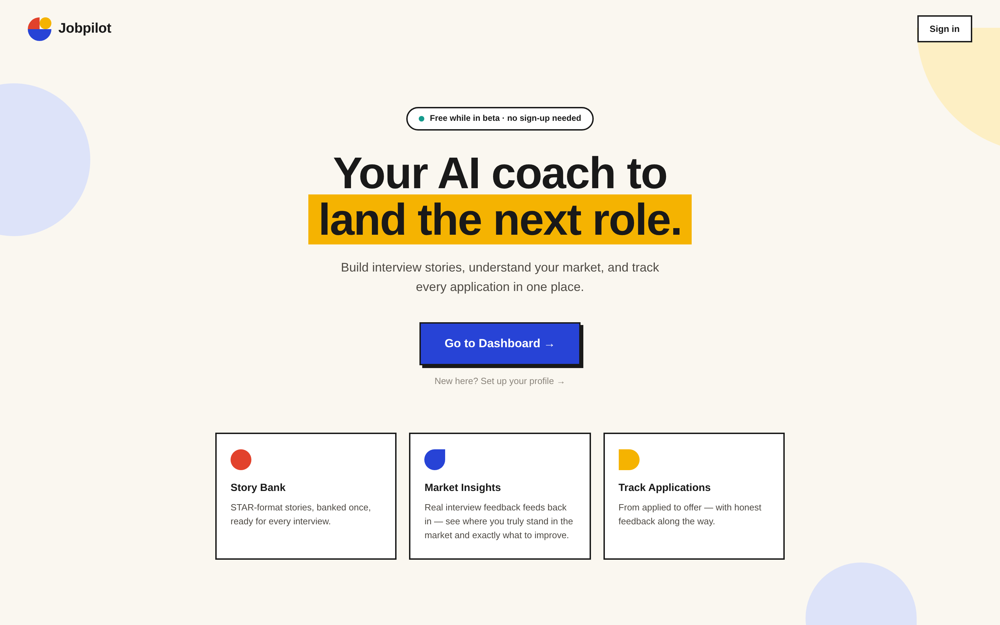
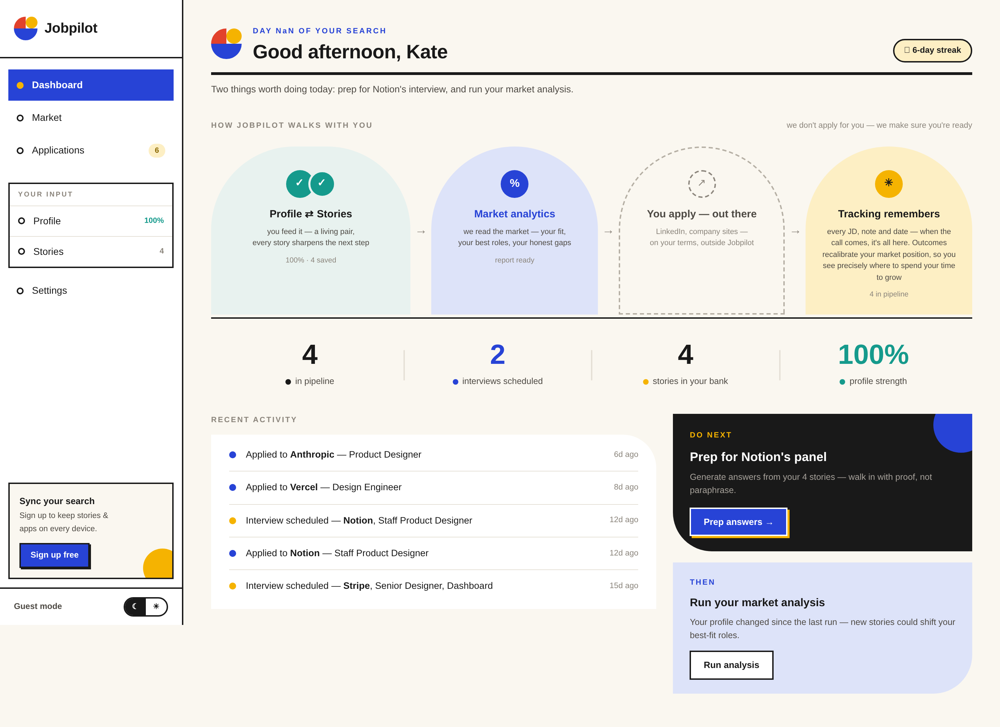
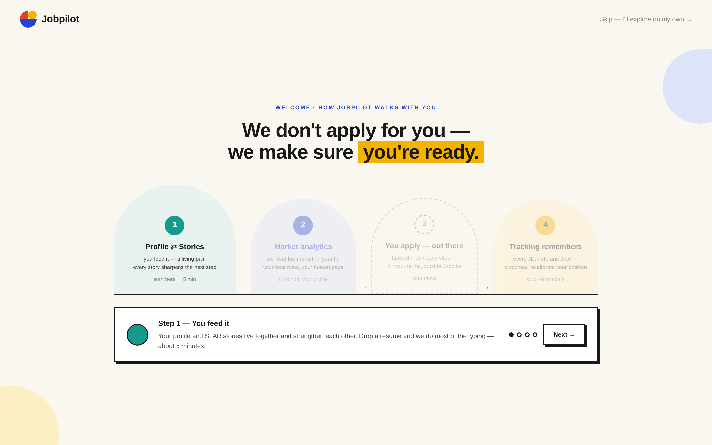
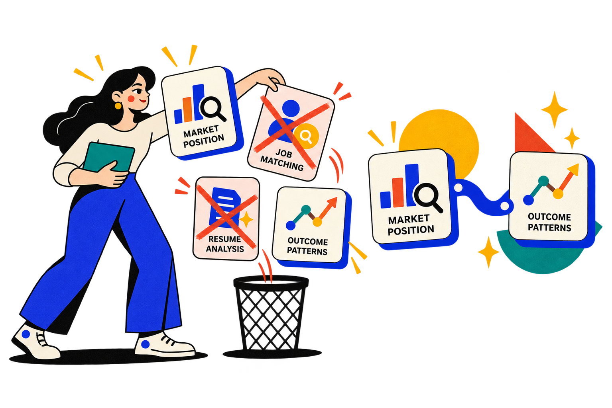
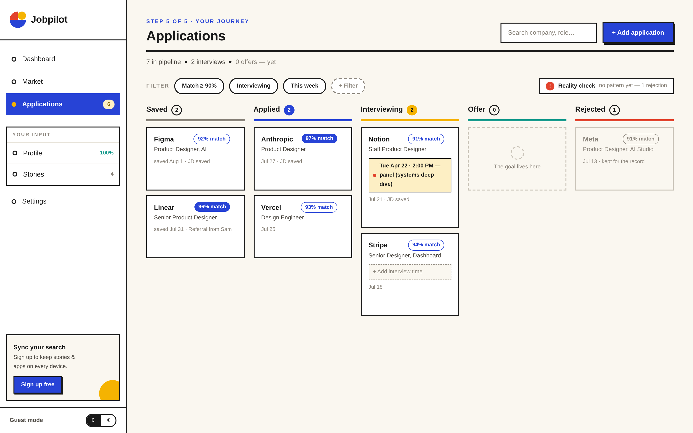
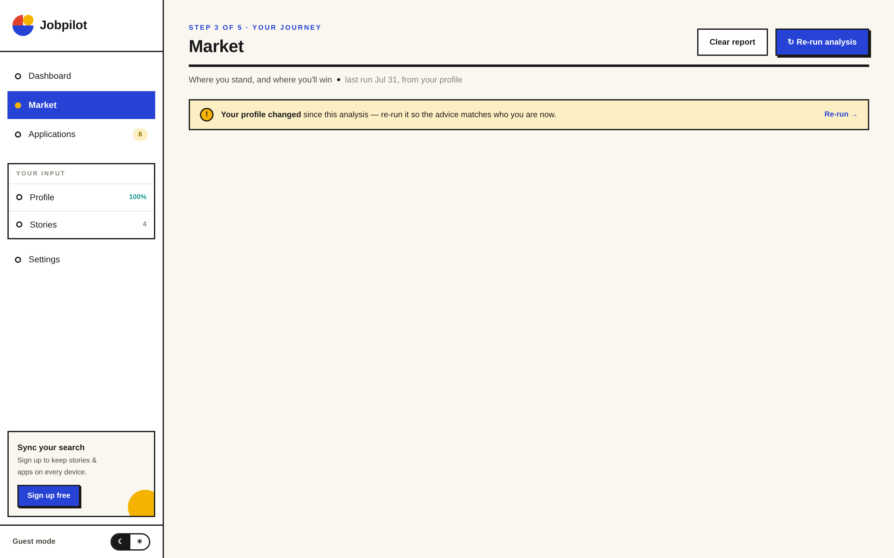
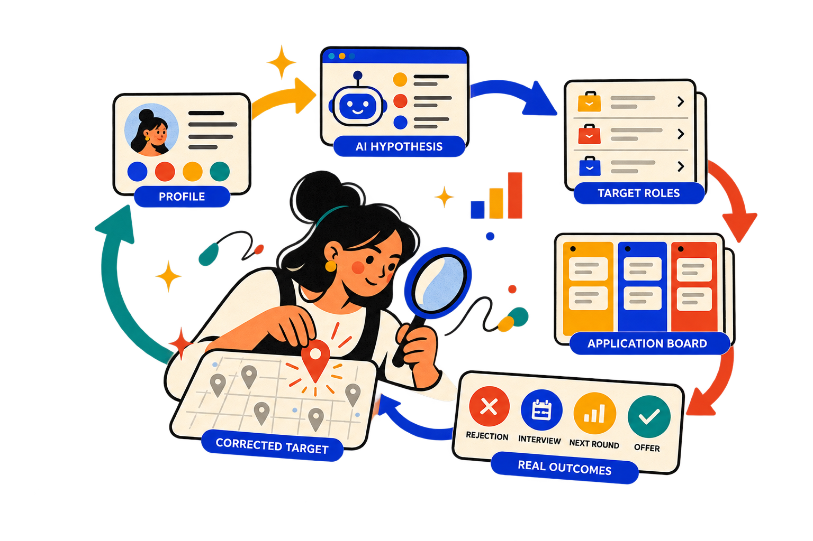

The role looks promising. The details live in a browser tab.
JOBPILOT · INDEPENDENT PRODUCT · 2026
An AI job coach that learns when the market disagrees.
I built JobPilot to help job seekers understand where they stand, keep the context behind every application, and use real outcomes to improve where they aim next.

ROLEProduct designer, founder, builder
TEAMSolo
TIME2 weeks
DELIVEREDStrategy, product, launch
01 · THE ORIGIN
The interview arrived. The job description was gone.
The recruiter calls. Preparation starts now.
Interview preparation now lacks the role context that made the application specific.
I first built the tool for myself.
Job hunting creates a long gap between applying and interviewing. I wanted one place that remembered the role, my stories, and what happened next.
STARTING QUESTION
Can the product remember the search, then help me learn from it?

02 · THE VISUAL SYSTEM
I designed a lighter interface for a stressful life moment.
DOPAMINE BAUHAUS
Warm enough to feel human. Structured enough to feel useful.
COBALT
TOMATO
SUN
TEAL
- Color marks progress and status.
- Hard edges make actions feel clear.
- Mechanical motion gives feedback a playful, decisive rhythm.

03 · VERSION ONE
The first concept gave AI four jobs.
Four AI bets diluted the product’s strongest advantage.
Market position
Estimate the roles and level that fit the user’s profile.
Job matching
Recommend open roles that look like a match.
Resume analysis
Review a resume and suggest improvements.
Outcome patterns
Use application results to update the user’s target.
Four AI betsOne product advantage worth protecting.
04 · THE CUT
I focused JobPilot on the two places where it had an advantage.

Data disadvantage
Users already discover roles on platforms with richer inventory, behavior, and matching data.
Crowded market
JobPilot’s own context offered a stronger direction than the crowded resume analysis category.
Context that compounds
JobPilot knows the user’s goals and their real outcomes. That context creates a compounding feedback loop.
05 · THE LIGHTER PRODUCT
AI supports the two moments where judgment adds value.
1
Estimate where you stand
Profile and story evidence become a first market hypothesis.
INPUTExperience + goals→OUTPUTTarget role hypothesis
2
Learn from what happened
Application outcomes correct the first estimate over time.
INPUTReal market reactions→OUTPUTSharper next target
The rest stays explicit and user controlled.
ProfileStory bankApplicationsInterview context


06 · THE DATA LOOP
The market corrects the first prediction.
Real outcomes keep the first answer open to revision.

PROFILE+MARKET HYPOTHESIS+REAL OUTCOMES=BETTER SELF UNDERSTANDING
Reality provides the strongest evidence.
07 · CRAFT AND SHIP
I took the product from idea to live in two weeks.
01Frame the problemMy own search became the starting evidence.
02Design the systemLow fidelity, high fidelity, visual language, motion.
03Build the productFigma MCP, AI coding tools, and direct implementation.
04Test and shipReal flows, responsive QA, live deployment.
14DAYS
Strategy, product design, implementation, and launch by one person.
08 · REFLECTION
AI should update its opinion when reality disagrees.
Start with a real problem
The missing job description was small, specific, and worth solving.
Focus where your data compounds
JobPilot creates value through the context it gathers across the user’s search.
Let behavior challenge the model
A useful coach becomes more honest as evidence accumulates.
Focus made JobPilot stronger.
Return to the beginning ↑